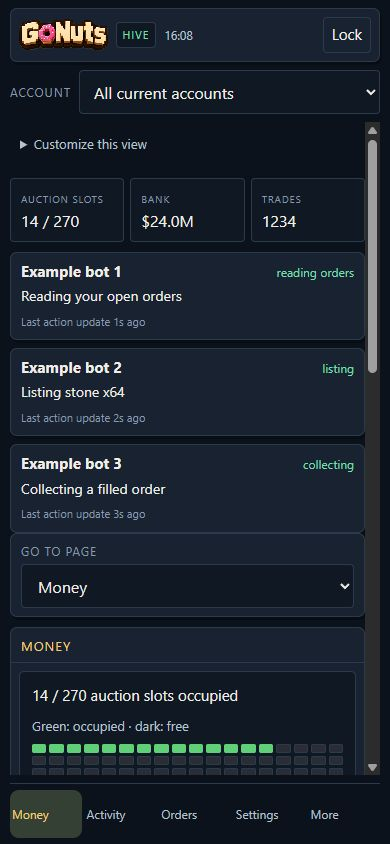
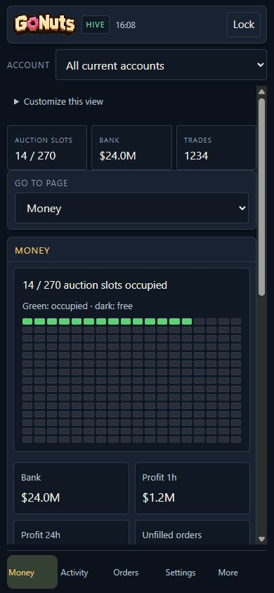

Your Hive on your phone
The local and hosted web panels share the mobile layout. The header, account selector and bottom navigation stay in place while the page content scrolls inside the screen.
Choose an account or the current Hive
Use the account selector at the top to inspect one bot. Current Hive capacity is the sum of the current accounts’ own observations: three accounts reporting 90 slots give 270 slots. A missing current report stays unknown. Historical accounts remain available for their records, marked historical; they do not turn a three-member Hive into four current members.
See what each bot is doing
Each current account has its own activity card, using that account’s checkpointed state and action. Update ages are visible. Old observations are marked stale; a quiet interval does not prove that trading failed. Selecting one account shows its own card.

Read Money without enlarging a desktop screenshot
On phones the existing Money figures appear as readable cards and recent-sale rows. The grid shows occupied slots in green and free slots in dark squares, with the count alongside it. Order funds, observed fills and collection totals retain their original meanings. The complete summary image is always visible first, beneath the bot activity area, with the readable cards below it. Touch and hold the image to use your browser’s copy, save or share options. No extra toggle is required, and the text stays available alongside it; desktop and Discord summaries retain their layout.

Fast tab switching
Reporting tabs keep separate images and readable summaries in memory for each selected account. Reopening a cached tab shows its last successful frame immediately, with an update age, while fresh state loads. Money, Activity, Orders, Listings and Hive are warmed one at a time in the background while this browser is visible. They do not all refresh every two seconds: the visible view takes priority, and a slow render cannot queue an unlimited set of requests. Settings forms and command buttons are never restored from cached reporting frames. Cold or evicted views still need an initial load; closing the browser clears its memory cache.
Stable updates
The summary image loads and decodes a replacement before displaying it. A failed refresh retains the last successful image with its time and a retry message. Switching accounts hides the old account image until the selected one loads. Money fields keep their positions as values change; unavailable sources stay explicitly marked instead of removing rows.
Customize your view
Expand Customize this view to show or hide summary tiles and account activity cards. These preferences are saved only in this browser. Switching views does not apply presets, change trading settings or send bot commands. Use More or Go to page to reach the remaining pages.
Account selection controls reporting. To change another client’s trading settings, open that client’s own panel.